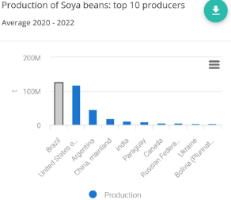
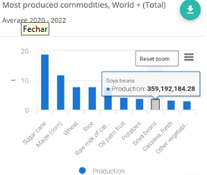
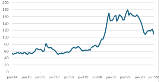
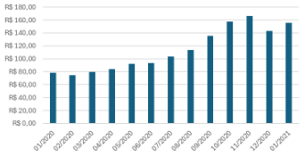
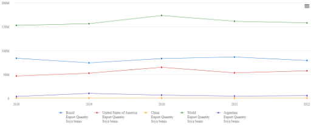
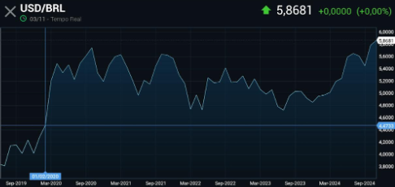
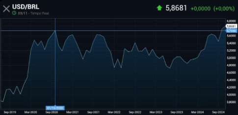
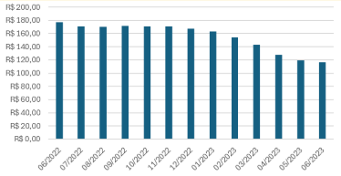
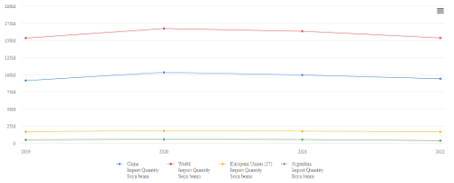
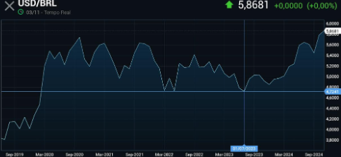

RESUMO
O artigo aborda a importância da soja no agronegócio brasileiro e global, destacando o Brasil como um dos maiores produtores mundiais. Apresenta um panorama das oscilações no preço da commodity, especialmente na última década, e explora os principais fatores que influenciam essas variações, como a oferta e demanda, a taxa de câmbio e o tamanho da safra. A produção brasileira de soja é vital para a economia impactada por fatores climáticos, logísticos e pelo mercado internacional, sobretudo pela demanda de países como China e membros da União Europeia. O artigo destaca como variações cambiais e políticas econômicas internacionais afetam o preço da soja e cita estudos sobre a elasticidade da transmissão de preços entre o Brasil e o Porto de Roterdã. A análise utiliza dados da Conab e do Estado de Mato Grosso, o maior produtor, como referência para entender as flutuações do preço da soja de 2014 a 2024. Por fim, sugere a criação de um site com informações sobre o mercado da soja, facilitando o acesso a dados relevantes para investidores e produtores, oferecendo insights sobre como a precificação é afetada e como tomar decisões informadas.
INTRODUÇÃO
O Brasil informalmente recebe o nome de “celeiro do mundo” – por sua imensa capacidade de exploração de recursos naturais – e no cerne do agronegócio tem a soja, sendo esta a principal commodity brasileira. Usada desde a produção de cosméticos até seus usos mais usuais como farelo destinado a ração animal.
O comércio da mercadoria em questão é de suma importância não só para economia brasileira como também global. Segundo a Embrapa, na safra de 2022/23 o Brasil produziu cerca de 2/5 da produção global do grão e aproximadamente 14% do montante total de exportações do Brasil foram do grão. A justificativa deste artigo se dá pela necessidade de expor dados relevantes a novos investidores no segmento, assim como entender o contexto desta mercadoria tão importante para o território brasileiro.
Uma peculiaridade do mercado desta leguminosa é as grandes oscilações no preço considerando uma janela de tempo relativamente pequena, dobrando de valor em menos de uma década para depois voltar a patamares próximos de antes da ascensão. Desta forma quais são os mais importantes componentes do preço da commodity?
Tendo em vista o cenário, este artigo terá como objetivo geral investigar os principais fatores nas relações comerciais do setor. Como objetivos específicos busca-se entender o panorama geral do mercado da soja e, posteriormente a essa contextualização, entender a composição do preço da soja, quais são os principais fatores que impactam nele, assim como os causadores das maiores variações de preços da última década. Por fim, pretende-se elaborar um site com informações precisas sobre o mercado da soja, dessa forma facilitando o acesso a esse material para que as análises sejam simplificadas, buscando beneficiar agricultores com informações privilegiadas sobre o comércio de tal produto, variáveis de preço e o que afeta isso.
2. DESENVOLVIMENTO TEÓRICO
2.1 Contextualização do preço da oleaginosa
A partir de análises, é perceptível uma grande variação no preço da soja nos últimos tempos, no ano de 2023 foi possível observar uma queda no meio do ano equivalente a 33% na saca do grão, onde o preço se encontrava em R$200,00 no início do ano e teve uma queda de R$66,00 ficando com o preço na faixa de R$134,00. Sendo assim, são analisados alguns fatores influenciadores para que esta variação ocorra, entre elas (AGRICULTURE, 2023):
Disponibilidade e tamanho da safra: De acordo com a última previsão do IBGE (maio de 2023), para este ano, a safra está estimada em 302,1 milhões de toneladas, ou seja, 14,8% maior que a safra de 2022. (AGRICULTURE, 2023);
Atraso na Comercialização: A perspectiva de uma boa oferta entrando em comercialização aliada ao atraso das vendas sugere uma combinação de aumento de volume com uma possível concentração dos negócios, o que também pressiona os preços (AGRICULTURE, 2023);
Taxa de Câmbio: A valorização do real frente ao dólar também tem impacto na formação do preço interno da soja. Por ser uma commodity cotada em dólar, quando a moeda americana “cai”, o preço do grão também tem queda em real (AGRICULTURE, 2023).
Posto isto, também examinou-se este trabalho que aborda a elasticidade da transmissão de preços no mercado de grãos de soja entre o Porto de Rotterdam e o Brasil entre julho de 1994 e setembro de 2000, diante de um modelo baseado em Mundlak e Larson (1992). Estimando-se um modelo de correção de erros, com e sem restrições nos parâmetros. Os resultados obtidos mostraram que, no curto prazo, os preços de grãos de soja no Brasil tendem a eliminar mais rapidamente os desequilíbrios transitórios comparado aos preços no Porto de Rotterdam.
A longo prazo, verificou-se que variações dos preços em Rotterdam e da taxa de câmbio são transmitidas totalmente para os preços da soja no Brasil, confirmando, dessa forma, a Lei do Preço Único nesse mercado. Os resultados da função de resposta de impulso mostraram que variações não antecipadas no preço da soja em Rotterdam são transferidas para o Brasil em dois períodos distintos. No primeiro, os preços crescem de forma ascendente até o sétimo mês após o choque inicial, a partir de então, os preços tendem a estabilizar-se ao longo do tempo. Enquanto que, variações na taxa de câmbio nominal causam bruscas oscilações nos preços da soja no Brasil (MARGARIDO; TUROLLA; FERNANDES, 2003).
2.2 Fatores influenciadores de variações
O valor da soja é inicialmente calculado a partir da cotação da Bolsa de Chicago juntamente com o prêmio de exportação que pode ser negativo ou positivo e é influenciado pela demanda do produto no local e também pelo valor do dólar (MIRIÃ; MARTINS; GONZAGA DE CASTRO JUNIOR, 2009, p 74).
Por conta dos diversos fatores que afetam o valor dessa commodity, temos o mercado futuro que ajuda os produtores a identificar os valores de taxas variáveis antecipadamente, isso é de extrema importância para que consigam ter um preço melhor em seu produto e atingir o lucro esperado para que não tenha prejuízos para as futuras safras (CAFFAGNI, 2023).
Um grande motivador de mudanças no valor da saca desse produto agrícola é as taxas de transporte e despesas de exportação que dependem do frete do local onde a soja será levada e de onde ela está saindo, além de todo o custo com o transporte e garantia da planta (CAFFAGNI, 2023).
Além dos fatores citados acima, ainda temos os que são imprevisíveis, incluindo os que causam perdas na lavoura, como as grandes mudanças climáticas, chuvas de granizo e secas que costumam comprometer grande parte da plantação. Temos incluídas nesse contexto as pragas, que sem o manejo adequado de insumos agrícolas, pode dizimar uma lavoura por inteiro por termos algumas espécies com reprodução acelerada que comprometem todo o sistema da planta (CAFFAGNI, 2023).
Todos os fatores ditos afetam diretamente no valor final da soja e gera grandes prejuízos, além de um aumento exacerbado nos produtos finais produzidos e vendidos ao consumidor final.
2.3 Principais causadores de oscilações no preço da commodity
Na obra, “O Caminho da Servidão”, HAYEK, 1944, faz uma crítica às implicações do modelo socialista para a economia, o segundo capítulo intitulado “A “inevitabilidade” da planificação”, explica ao discutir como um modelo comunista lida com variações na oferta, como seu antagonista, o modelo liberal lida, onde num país capitalista se há uma escassez de certo produto, os agentes por haver a possibilidade vender a preços mais elevados escoam sua produção para lá e assim abastecem o local – no modelo contrário, devido ao controle de preços isso não acontece. A teoria usada por ele se aplica ao complexo da soja onde o fator determinante para as variações no preço é a oferta e demanda.
A oferta da soja advém da produção e é ditada majoritariamente pelos 3 maiores produtores do mundo. Nos gráficos abaixo, apresentam-se dados da “Food and Agriculture Organizations” - Organização das Nações Unidas destinada a acabar com a fome no mundo.


Fonte: FAOSTAT (2023).
Com as nações Brasil, Argentina e Estados Unidos representam cerca de 80% da produção mundial, quebras de safra nesses países ocasionam flutuações acentuadas no preço da commodity.
Em segunda instância, o fator a se analisar é a demanda, esta é ditada no Brasil pelos principais compradores, segundo Coronel et al. (2008, p.1): “os principais importadores da soja em grão produzida no Brasil são países da União Europeia, China e Japão; do farelo de soja são União Europeia, Tailândia e China, e do óleo de soja, China, Irã e Índia.”. Então variações em políticas econômicas desses países impactam fortemente. Por exemplo, se países superpopulosos como a China e a Índia, optarem por aumentar suas exportações, a tendência de preço é aumentar e muito.
3. METODOLOGIA
3.1 Tipo de pesquisa
No excerto a abordagem a pesquisa será descritiva, e por um viés qualitativo, com o intuito de investigar os motivos causadores das oscilações de preços na última década, mesmo que a análise seja baseada em dados concretos, em última instância, há certa subjetividade para determinar qual foi o precursor da subida ou descida. A caracterização como “descritiva” é consoante com a definição dos autores De Freitas, Prodanov, 2013 em um e-book sobre metodologia de artigos científicos: “Nas pesquisas descritivas, os fatos são observados, registrados, analisados, classificados e interpretados, sem que o pesquisador interfira sobre eles, ou seja, os fenômenos do mundo físico e humano são estudados, mas não são manipulados pelo pesquisador. Incluem-se, entre as pesquisas descritivas, a maioria daquelas desenvolvidas nas ciências humanas e sociais, como as pesquisas de opinião, mercadológicas, os levantamentos socioeconômicos e psicossociais.”
3.2 Método de obtenção de dados
O método de obtenção de informações será por meio do banco de dados da CONAB, vale ressaltar que os dados cobrirão 10 anos pela falta de ferramentas no tema, outras fontes ou não possuíam informações sobre o contexto brasileiro, ou não havia como analisar simultaneamente os anos e os meses, só tinha a possibilidade de uma análise.
E será usado os dados de preço no estado do Mato Grosso por ser o maior produtor e ser uma mediana do preço do país, não faria sentido usar a média do país pois teria o mesmo peso a cotação em estados como a Paraíba que apresentam pouca ou nenhuma produção e o maior produtor.
O site foi programado em Java Script, CSS e HTML, ele ainda não está hospedado na internet, porém sua formatação já está disponível. Quando estiver finalizado, possuirá, de forma didática, informações sobre o mercado da soja, onde investidores terão acesso e por esse meio tomarão a decisão de investir. Assim o site contendo especificações sobre o âmbito econômico, buscará trazer interesse aos investidores do mundo inteiro, com intuito de divulgar conhecimento e impulsionar a commodity no mercado global.
3.3 Método para tratamento de dados
Em primeira instância, a partir da base de informações supracitada, será gerado um gráfico que mostre o valor da soja de 2014 a 2024, para elucidar ao leitor um panorama geral da situação da commodity.
Além disso, posteriormente será identificado as principais oscilações e gerado gráficos semanais do período, entrando em detalhes sobre cada um individualmente, este método tem o intuito de encontrar quando exatamente foi o acontecimento e ajudará a identificar o cerne das variações.
Adicionalmente, como última etapa, serão cruzados os dados obtidos com variadas fontes na internet para obter a resposta sobre o causador e efetivamente a análise do período.
4. RESULTADOS
4.1 Panorama geral da década
Os dados sobre o preço da soja a nível nacional advém exclusivamente da praça do estado de Mato Grosso - unidade federativa com maior produção. Ao escolher um local somente facilita a pesquisa delimitando seu escopo, e retira variáveis, um exemplo sendo os problemas de logísticas, cidades portuárias enfrentam consideravelmente menos. MT além de compartilhar das muitas características com os outros principais produtores têm extrema relevância econômica, tornando - se um ótimo exemplar para fonte de informações.
Figura 4.1: Preço médio mensal da soja na praça de MT de 2014 a 2024

Fonte: FAOSTAT (2023).
Ao analisar o gráfico contendo os preços médios da última década é notório 2 períodos - estes serão o foco do artigo, daqui para frente - um com uma alta muito forte, com início perto de janeiro de 2020 e término na entrada do ano de 2021. O segundo é uma queda acentuada entre junho de 2022 e o mesmo mês de 2023.
4.2 Período de alta
Primeiramente, será analisado durante a alta, a expressividade desse período é imensa, dada o número de variáveis necessárias para uma commodity tão estabelecida como a soja ter um aumento de preço de 100% em pouco menos de um ano.
Figura 4.2: preço médio mensal da soja durante o aumento dos preços

Fonte: CONAB (2023).
Antes de tudo, é necessário correlacionar os eventos a pandemia da Covid - 19. Uma das políticas adotadas por muitos países para mitigar o contato com o vírus foi dar destaque ao mercado interno, diminuindo ao máximo as exportações para que a produção ficasse dentro do país.
Os Estados Unidos - um dos principais concorrentes do Brasil - no período destacado sofreram queda expressiva em suas exportações da commodity o que possibilitou ao Brasil preencher esta demanda.
Figura 4.3: Exportações dos maiores produtores de soja a nível mundial entre os anos de 2018 e 2022

Fonte: FAOSTAT (2023).
Além disso, segundo Costa (2022. p 21) em sua dissertação sobre os processos de formação do preço da soja:
Os preços da soja nos portos brasileiros, que são referência para o mercado físico nas regiões produtoras, são formados principalmente pelo comportamento dos futuros de soja em Chicago, da taxa de câmbio R$/US$ e do prêmio de exportação nos portos brasileiros. Também, as despesas com fretes, taxas portuárias, corretagem entre outros custos logísticos também são importantes componentes e ajudam a explicar os diferentes níveis de preços no mercado físico nas distintas regiões produtoras do Brasil e do Rio Grande do Sul.
Todos os fatores supracitados contribuem na alta, as dificuldades logísticas para contornar a Covid - 19, o preço do dólar aumentou drasticamente.
Figura 4.4: Preço do dólar pré- pandemia

Fonte:INVESTING (2024).
Figura 4.5 Ápice do dólar durante a pandemia

Fonte:INVESTING (2024).
Em complementaridade, foram estes fatores que fizeram o preço da saca dobrar de valor e é válido destacar que todos os principais fatores indicavam para uma alta na soja, o que faz sentido pois é necessário um contexto muito próspero para uma commodity tão globalizada como a soja duplicar de valor.
4.3 Período de queda
É errôneo adotar uma postura maniqueísta, contudo esse período é marcado principalmente pelos traços opostos da subida, aqui o mundo já caminhava para o fim da pandemia - em maio de 2023 a OMS viria a declarar o coronavírus não mais como emergência de saúde pública de importância internacional. Devido às altas taxas de juros no mundo todo - para conter a inflação gerada pela expansão monetária - muitos países enfrentaram uma recessão econômica, levando a uma baixa demanda e consequentemente menor preço.
Figura 4.6: Preço médio da soja durante sua queda, entre julho 2022 e julho 2023

Fonte:CONAB (2023).
Figura 4.7: Importações dos maiores compradores brasileiros de soja

Fonte:FAOSTAT (2023).
Ademais, houve ainda uma queda do dólar, voltando a praticamente patamares de antes da covid, prejudicando exportações.
Figura 4.8 : Dólar no meio do ano de 2023

Fonte:INVESTING (2024).
A imagem 4.8 representa a mínima do dólar no período, e de modo geral é possível observar oposto ao presenciado no início da pandemia, com todas variáveis contribuindo para uma queda nos preços, o que diminui em cerca de ⅓ o valor da saca.
4.4 SITE
O site tem o nome “Capital do Campo”, ele foi criado num estilo minimalista, com as principais cores sendo tons pastéis, de verde, laranja, amarelo, e utilizando da fonte Garamond - visando uma identidade visual séria e facilitar a leitura do público.
Ele tem uma temática de jornal e todo conteúdo é produzido de acordo, seu objetivo principal é disseminar informações úteis, de forma acessível, a todos, sobre o mercado dessa commodity que representa parte tão significativa do PIB.
CONSIDERAÇÕES FINAIS
Em última análise fica bem claro que ao adotar uma visão macroeconômica, uma das variáveis que interferem largamente nos preços de commodities globalizadas é as mudanças nas curvas de oferta e demanda, tendo apenas que encontrar quais fatores foram propulsores.
E em praças brasileiras as taxas de câmbio são importantíssimas para determinar os preços pagos aos produtores, mostrando a importância de boas políticas monetárias por parte dos governadores.
Ademais, as oscilações de preços tão grandes, em espaços de tempo tão curtos, mostram paralelamente a necessidade dos empreendedores do agronegócio entenderem dinâmicas de mercado, como boas práticas de comercialização podem garantir a sobrevivência de negócios.
5. REFERÊNCIAS
Referências bibliográficas
CORONEL, D. et al. Edifício Residencial Veredas. Ap, v. 37, n. 31, p. 3885–2260, 2008.
HAYEK, F. A. O Caminho Da Servidao. [s.l.] LVM EDITORA, 2017.
FAOSTAT. Crops and Livestock Products. Disponível em: .
CAFFAGNI, L. C. Matriz de sensibilidade da soja. AgroANALYSIS, v. 43, n. 5, p. 37–39, 2 jun. 2023.
Dados econômicos - Portal Embrapa. Disponível em: .
MARTINS, C. M. F.; DE CASTRO JUNIOR, L. G. Dinâmica de Exportação: A Internalização do Preço da Soja em Grão Brasileira. Revista de Economia Mackenzie, [S. l.], v. 3, n. 3, 2009. Disponível em: https://editorarevistas.mackenzie.br/index.php/rem/article/view/777. Acesso em: 20 maio. 2024.
AGRICULTURE, I. Por que o preço da soja está instável em 2023? Disponível em: https://www.indigoag.com.br/pt-br/blog/por-que-o-preco-da-soja-esta-instavel-em-2023.
MARGARIDO, M. A.; TUROLLA, F. A.; FERNANDES, J. M. Análise da elasticidade de transmissão de preços no mercado internacional de soja. Pesquisa & Debate, v. 12, n. 2(20), 2001.
COSTA, N. Análise do processo de formação do preço da soja no Brasil e no Rio Grande do Sul. PDF—Santa Maria Editora GR: [s.n.]
INVESTING. Investing.com - Stock Market Quotes & Financial News. Disponível em: https://www.investing.com/.